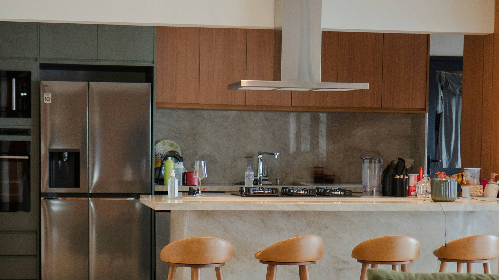

Green, clay, warm wood, and a lot more texture than the last decade gave us. That is where 2027 is heading, and six major paint brands have now said so out loud.
What almost nobody writes is what that palette does once it meets Florida light, Florida ceilings and Florida slabs. That part is in here too.
One practical note before the pretty part. Section 232 duties on imported kitchen cabinets and vanities have sat at 25 percent since October 14, 2025. The scheduled increase to 50 percent was delayed by proclamation on December 31, 2025, and now takes effect January 1, 2027.
If a kitchen is anywhere in your plans for next year, the cabinet order belongs on this side of the calendar. Worth knowing before you fall in love with a door style.
Now the fun part. Here is what 2027 actually looks like, and what survives contact with Florida.
The 2027 colors are green and clay
Six of the major paint brands have announced their 2027 Color of the Year so far. Benjamin Moore and Pantone are still out, which usually means October and December.
- Sherwin-Williams: Celery (SW 6421). A light, airy herbal green with warm yellow undertones. Pale rather than bold, which caught a lot of people off guard.
- Behr: Grounded (T27-01). A mossy olive with brown undertones. Their fourth consecutive dark, saturated pick.
- Dutch Boy: Deep Rooted. An earthy orange that reads as terracotta. Sold only at Menards.
- Glidden: Artifact (PPG10-16). A warm smoky blue, not a cool one. PPG Paints picked it too.
- Valspar: Cottage Door (8004-38E). A grayed mid-tone blue, closer to midwash denim than to navy.
- Graham & Brown: Rose Earth. A warm, muted rose drawn from the mineral pigments in Italian clay.
Celery with the three coordinating colors Sherwin-Williams publishes beside it. Names and codes are Sherwin-Williams’. On-screen color is an approximation, so pull a physical chip before anyone orders anything.
Three of the six reference earth, ground, or roots in the name itself. Sherwin's broader 2027 forecast, called Rewild, runs 48 hues through oxblood, sun-baked clay, ochre yellow and chalky white. The industry is telling you the same thing six different ways.
Translation for anyone buying cabinets: green and clay are next year's colors, and the two blues are the early signal that the neutral-blue cycle is coming back around behind the brown one.
The Florida filter matters here more than most places. Tampa designer Lisa Gilmore has argued that white kitchens are not going anywhere in this state. They are just being layered warmer, with wood tones, stone with real movement, and darker islands. She is right, and the reason is physical. Our light is hard and our mid-century ceilings are eight feet. An olive kitchen that photographs beautifully in a Nashville renovation can read like a cave in a 1958 Shore Acres ranch.
Use the 2027 colors where they work: an island, a pantry run, a laundry, a powder bath. Keep the perimeter light and let the color do a job rather than fill a room.
Flooring: warm mid-tones, wider boards, fewer seams
Flooring is the category most trend articles skip, and it is the one most people actually spend money on.
- Gray is finished. Honey, blonde oak, chestnut, light caramel and sandy taupe have taken over. Warm mid-tones also hide dust and small scratches better than dark floors, which is not a small thing here.
- White oak still leads, with a Janka hardness around 1360.
- Wide plank, seven to ten inches, to show more grain and make a room read larger.
- Matte and wire-brushed finishes have replaced gloss.
- Large-format tile keeps growing. Twenty-four by forty-eight, thirty by thirty, eighteen by thirty-six. Twelve by twelve now reads dated.
- Herringbone as an anchor, not a whole house. An entry or a kitchen, not an open plan.
- One floor, running through. Kitchen into dining into living, no transitions.
Where this collides with Pinellas County: most of our older stock is slab on grade, and a lot of those slabs were poured without a vapor barrier. Moisture comes up through the slab whether or not the flooring is rated waterproof, and the failure shows up as cupping or adhesive release a year after somebody signed off on the job. Get a calcium chloride or relative humidity test on the slab before anything goes down. It costs almost nothing and it is the difference between a floor that lasts and a floor you install twice.
If you are below base flood elevation, the material choice is not a preference. Finishes below BFE have to be flood-damage-resistant, which rules out engineered wood on a ground floor in a mapped zone regardless of what the showroom tells you.
Kitchens: the island becomes furniture
I covered the 2026 kitchen in detail in 2026 kitchen and bath trends, including quartzite, white oak, and why the cabinet box matters more than the cabinet color. Here is what is new for next year.
- Legs instead of toe kicks. Island bases lift off the floor and the flooring runs underneath, so the island reads as a piece of furniture rather than casework.
- Rounded countertop edges have overtaken the straight edge. Softer to look at, and it takes the impact point off a corner you walk past a dozen times a day.
- Curves in the plan, not just the profile. Rounded island ends that open up circulation, arched pantry openings cut into the same casework.
- Zoned stations. Beverage and baking stations lead the requests, wine has moved off the island end into a tall cabinet with a door, and the pet bowls are going into a toe-kick pullout.
- Raised panels are back in traditional kitchens, running alongside flat panel rather than replacing it.
- Fluting everything is over. Reeding survives on one curved surface. On every surface it already looks like 2024.
Bathrooms reverse course
This is the most interesting thing in the 2027 forecasts, and it contradicts what I wrote a month ago.
In August I reported that the industry expected large-format tile to dominate bathrooms for the next three years, driven by pros who want fewer grout lines. That was accurate to the survey data. But the 2027 product coming out of this year's bathroom exhibition in Milan points the other way: small-format tile, mosaic, and checkerboard layouts are returning, with color washed across every surface.
Both can be true. Large format is still the right call for a floor you want to stop cleaning. The pattern is coming back on the walls.
The freestanding tub is also moving back to the center of the plan, sometimes stepping out of the bathroom and into the bedroom. And there is a quiet counter-trend toward darker, moodier bathrooms as a reaction against the white spa box everybody built from 2019 to 2025.
The one 2027 bath feature I would install in every Florida house
Leak detection, automatic shut-off valves, and water monitoring are moving behind the finishes, where a sensor under a vanity catches a slow supply leak before it destroys the cabinet and a smart valve cuts the water when usage jumps outside the normal pattern.
In a market with our humidity, a slow leak behind a vanity is not a plumbing bill. It is a mold remediation, a disclosure item, and a hard conversation at resale. This is the cheapest insurance in the entire 2027 trend list and almost nobody is specifying it yet.
Paint, and the one technique worth stealing
Color drenching is still running strong going into 2027, and the version worth copying is the sheen trick: the same color in eggshell on the walls and semi-gloss on the trim. You get depth and definition out of one gallon family, with no contrast line to cut.
On dark colors in Florida, one caution from thirty years of doing this. A deep color on a west-facing wall in St. Petersburg is a different color at four in the afternoon than it was at nine in the morning. Sample big, sample on the actual wall, and look at it at the hour you actually live in the room. A twelve by twelve square from the paint store is not a test.
The four dates that decide what you can build
Here is the part the design magazines will not write, and it matters more than any of the above.
- December 31, 2026. Pinellas substantial damage compliance deadline. The county issued substantial damage determinations to close to 10,000 homes and businesses after Helene and Milton, and the compliance deadline has been extended to the end of this year. If you hold one of those letters, this date governs everything else on your calendar.
- December 31, 2026. Florida Building Code 9th Edition transition. Tighter flood-resistant construction and wind pressure standards. Generally a permit application accepted as complete under the 8th Edition is processed under the 8th Edition, which makes the timing of your submittal worth real money.
- January 1, 2027. Cabinet and vanity tariffs double. Twenty-five percent to fifty percent on imports. Domestic lines are not subject to the increase. Chinese-origin cabinets can exceed seventy percent combined once anti-dumping duties stack on top.
- January 7, 2027. The federal institutional investor ban takes effect. I wrote about what that does to Tampa Bay inventory here.
Three of those four land inside a nine-day window. That is not a coincidence anybody planned, but it is going to make this December the busiest permit month Pinellas County has seen in a while.
What I would actually do
If you are renovating in 2027, do three things this fall.
Get your cabinet order placed or your pricing locked before January, and ask your supplier directly whether the line is domestic or imported. That one question is worth thousands of dollars on a mid-size kitchen.
Find out where your scope sits relative to the substantial improvement threshold before you fall in love with a plan. In the City of St. Petersburg the threshold is 49 percent of the structure's pre-improvement value, not 50, and the special flood hazard area covers roughly three quarters of the city. Costs can be tracked cumulatively, so three careful projects at 30 percent each can add up to a determination on the third permit.
And get the permit in before the code cycle turns, if your scope is ready.
The trend list tells you what looks current. The tariff schedule, the code cycle, and the elevation certificate tell you what you are allowed to build and what it is going to cost. I read both, which is most of the reason this article exists.
Send me your address
I hold a Florida Certified General Contractor license and spent three decades in interior renovations and building materials before I sold real estate.
If you are planning work for next year, send me the address. I will pull your permit history, tell you roughly where a scope sits against the substantial improvement threshold, and tell you which parts of your wish list are going to get expensive in January. No cost, no obligation, no pitch.
Jesse Battle IV
Licensed Real Estate Sales Associate, Charles Rutenberg Realty Inc.
Florida Certified General Contractor, CGC1506583
St. Petersburg, Florida
Sources: 2027 Color of the Year announcements from Sherwin-Williams, Behr, Glidden, Valspar, Dutch Boy and Graham & Brown; Sherwin-Williams Colormix Forecast 2027; Presidential Proclamation of December 31, 2025 amending Section 232 duties on timber, lumber and derivative wood products; Pinellas County Substantial Damage and Substantial Improvement guidance; City of St. Petersburg floodplain management requirements; Tampa Bay Times reporting on regional design trends, July 2026; 2027 bathroom product reporting from the International Bathroom Exhibition, Milan. Tariff schedules and compliance deadlines have been revised before and can be again. Code, flood and permitting information here is general. Confirm requirements for a specific property with the City of St. Petersburg or Pinellas County building and floodplain departments.